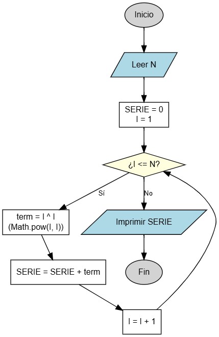

Suma de Serie de Potencias
Calculando la suma de una serie exponencial En este ejercicio practicarás el uso de ciclos (bucles) para resolver una serie matemática. Aprenderás a utilizar un acumulador para sumar valores que se generan en cada vuelta del ciclo, donde cada término depende del valor actual del contador.

Objetivo
Crear un programa que solicite un número entero N y calcule el resultado de la suma de la siguiente serie:
\(1^1 + 2^2 + 3^3 + ... + N^N\)
Esto significa que si el usuario ingresa 3, deberás sumar: \(1^1 + 2^2 + 3^3\) (es decir: \(1 + 4 + 27 = 32\)).
Variables a Declarar
- N: tipo entero (
int) - El número de términos que tendrá la serie (el límite). - I: tipo entero (
int) - La variable de control del ciclo (contador). - SERIE: tipo real (
double) - El acumulador donde guardarás la suma total.
Operaciones a Realizar
- Leer el valor de N.
- Inicializar la variable SERIE en 0.
- Iniciar un ciclo (como un
forowhile) que vaya desde I = 1 hasta N. - En cada vuelta del ciclo:
- Calcular el término actual: Elevar I a la potencia de I (\(I^I\)).
- Sumar ese resultado a la variable SERIE.
- Al finalizar el ciclo, imprimir el resultado total.
Fórmula de la Serie
\[\sum_{i=1}^{N} i^i\]
Resultado Esperado
Ingrese el numero de terminos (N): 3 El resultado de la serie es: 32.0 (Explicación: 1^1 es 1, 2^2 es 4, 3^3 es 27. La suma 1+4+27 es 32).